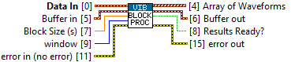
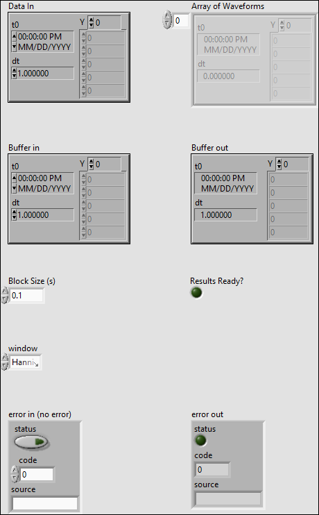
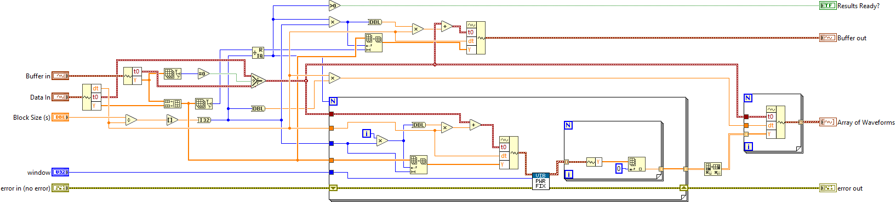

Buffers incoming data and computes the vibration parameters on FIXED-size blocks (Block Size). Outputs 7 waveforms (PBand, Crest, Peak, RMS, Max, Min, Max-Min), one point per complete block, dt = block duration, t0 continuous. Unused samples are returned in Buffer out: keep them in the plugin's class data and wire them back to Buffer in on the next Process call.


